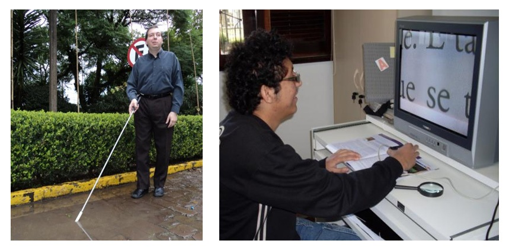

Tecnologia que promove autonomia
Tecnologia assistiva reúne recursos que ajudam pessoas com deficiência a realizar atividades com maior independência.

Leitores de tela
Transformam informações textuais e elementos da interface em fala ou saída Braille.
Ampliadores de tela
Aumentam o conteúdo exibido e podem facilitar a leitura por pessoas com baixa visão.
Teclados e mouses adaptados
Oferecem alternativas de interação para pessoas com diferentes necessidades motoras.
Referências
ENAP. eMAG Conteudista: Módulo 1 / Introdução (2016) e Módulo 2 / Web Acessível (2016).